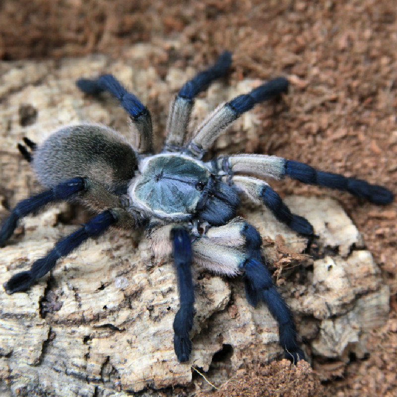

Old World Tarantulas
Old world tarantulas are native to Africa, Asia, Middle East, and Europe.
Key Traits
- Often more defensive and fast.
- No urticating hairs.
- Rely on speed, threat postures, and biting when cornered.
Venom Potency
Old World species tend to have more potent venom, meaning it has stronger neurotoxic effects. This is still not fatal to healthy humans, but can be very painful.
Because they lack urticating hairs, they rely more heavily on their venom and speed for defense.
Behavior
- Quick and unpredictable
- Known for dramatic *threat postures*
- Not recommended for beginners in captivity
Examples of Old World Species

Poecilotheria regalis
Indian Ornamental

Haplopelma (Cyriopagopus) lividum
Cobalt Blue

Pterinochilus murinus
Orange Baboon / “OBT”

Monocentropus balfouri
Socotra Blue Baboon

Stromatopelma calceatum
Feather Leg Baboon